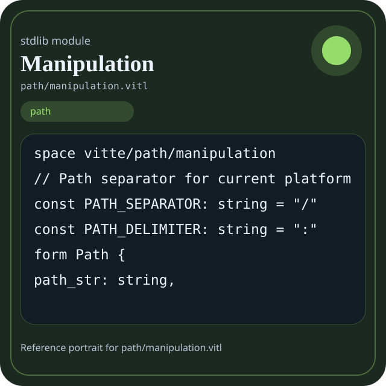

Stdlib module path/manipulation.vitl
This page is a wiki-style reference for one concrete stdlib file. It explains what the file owns, where it fits in the family, and how to decide whether this is the right surface to depend on.

path/manipulation.vitl.Family: path
Kind: public stdlib surface
Page style: this reference follows the same “encyclopedic card + portrait + usage contract” logic as the keyword pages, but for stdlib modules.
Summary
- Overview
- Purpose
- Taxonomy
- Implementation profile
- Top-level API inventory
- Position in family
- Declaration map
- Representative signatures
- How to use this module
- User example
- Keyword coverage
- Source shape
- Source landmarks
- Source organization
- Complete API catalog
- Integration boundaries
- Composition guidance
- Relationship table
- Neighbor modules
Overview
| Field | Value |
|---|---|
| Path | path/manipulation.vitl |
| Family | path |
| Kind | public stdlib surface |
| Line count | 222 |
| Declared procedures | 40 |
| Declared forms/picks | 4 |
`path/manipulation.vitl` is a public stdlib surface inside the `path` family. It should be read as one focused slice of the broader family responsibility: Path manipulation, special locations, walkers, and globbing.
Purpose
This file should be chosen because of responsibility, not because its name “sounds close enough”. Inside the path family, it carries one focused part of the contract and keeps that responsibility separate from neighboring concerns.
- A project root can be normalized before any file is read.
- A walker can enumerate source files while parsing and diagnostics remain elsewhere.
Taxonomy
Think of this page as a generated encyclopedia entry rather than a hand-written tutorial. The goal is to show what kind of module this is, how dense it is, and what reading strategy makes sense before depending on it.
- Large algorithm surface: this file exposes many procedures and likely acts as a domain toolkit rather than a single thin wrapper.
- Owns domain vocabulary: the module declares data shapes in addition to executable helpers, so its types are part of the contract.
- Has tuning constants: part of the module behavior is controlled by named constants that document default precision, limits, or policy.
- Minimal top-level dependencies: the module reads as mostly self-contained from its opening declarations.
- Explicit export surface: the file ends with visible export declarations instead of relying only on implicit namespace discovery.
Implementation profile
This profile is inferred directly from the source text. It does not replace reading the file, but it tells you quickly whether the module is mostly declarative, loop-heavy, branch-heavy, or organized around many small exits.
| Signal | Count | What it suggests |
|---|---|---|
if | 0 | Branching density and local decision-making. |
while | 0 | Loop-heavy or iterative implementation style. |
for | 1 | Collection-style traversal at source level. |
match | 0 | Variant-driven branching or grammar-style decoding. |
let | 2 | Local state and intermediate value density. |
give | 40 | Number of explicit exit points and result shaping. |
Top-level API inventory
| Surface | Items |
|---|---|
| Procedures | path_new, path_normalize, path_resolve, path_absolute, path_relative, path_get_parent, path_get_filename, path_get_basename, path_get_stem, path_get_extension, path_get_directory, path_get_root |
| Forms | Path, PathManipulationManifest, PathManipulationHealth, PathManipulationSummary |
| Picks | none declared at top level |
| Constants | PATH_SEPARATOR, PATH_DELIMITER |
| Exports | * |
Imported surfaces
This file does not advertise a top-level `use` surface in its opening declarations. That often means it is either self-contained or an aggregation layer.
Position in family
This file is module 3 of 5 in the path family when ordered by path. By procedure count it ranks 2, and by line count it ranks 2. Those ranks are useful as rough signals of breadth, not as quality judgments.
Declaration map
The declaration map turns raw source into a scan-friendly catalog. It is useful when the file is large enough that a reader wants to orient by kinds of surfaces first.
| Line | Name | Kind | Role |
|---|---|---|---|
| 1 | vitte/path/manipulation | space | Declares the namespace that anchors this file in the stdlib tree. |
| 8 | PATH_SEPARATOR | const | Defines a named constant reused across the module. |
| 9 | PATH_DELIMITER | const | Defines a named constant reused across the module. |
| 11 | Path | form | Introduces a structured data shape that other procedures can exchange. |
| 16 | PathManipulationManifest | form | Introduces a structured data shape that other procedures can exchange. |
| 23 | PathManipulationHealth | form | Introduces a structured data shape that other procedures can exchange. |
| 30 | PathManipulationSummary | form | Introduces a structured data shape that other procedures can exchange. |
| 36 | path_new | proc | Owns path semantics, traversal, or normalization. |
| 43 | path_normalize | proc | Owns path semantics, traversal, or normalization. |
| 47 | path_resolve | proc | Owns path semantics, traversal, or normalization. |
| 51 | path_absolute | proc | Owns path semantics, traversal, or normalization. |
| 55 | path_relative | proc | Owns path semantics, traversal, or normalization. |
| 60 | path_get_parent | proc | Owns path semantics, traversal, or normalization. |
| 64 | path_get_filename | proc | Owns path semantics, traversal, or normalization. |
| 68 | path_get_basename | proc | Owns path semantics, traversal, or normalization. |
| 72 | path_get_stem | proc | Owns path semantics, traversal, or normalization. |
| 76 | path_get_extension | proc | Owns path semantics, traversal, or normalization. |
| 80 | path_get_directory | proc | Owns path semantics, traversal, or normalization. |
| 84 | path_get_root | proc | Owns path semantics, traversal, or normalization. |
| 89 | path_join | proc | Owns path semantics, traversal, or normalization. |
| 93 | path_join_multi | proc | Owns path semantics, traversal, or normalization. |
| 97 | path_with_extension | proc | Owns path semantics, traversal, or normalization. |
| 101 | path_with_filename | proc | Owns path semantics, traversal, or normalization. |
| 106 | path_exists | proc | Owns path semantics, traversal, or normalization. |
| 110 | path_is_file | proc | Owns path semantics, traversal, or normalization. |
| 114 | path_is_dir | proc | Owns path semantics, traversal, or normalization. |
| 118 | path_is_symlink | proc | Owns path semantics, traversal, or normalization. |
| 122 | path_is_absolute | proc | Owns path semantics, traversal, or normalization. |
| 126 | path_is_relative | proc | Owns path semantics, traversal, or normalization. |
| 130 | path_is_hidden | proc | Owns path semantics, traversal, or normalization. |
| 135 | path_equals | proc | Owns path semantics, traversal, or normalization. |
| 139 | path_starts_with | proc | Owns path semantics, traversal, or normalization. |
| 143 | path_ends_with | proc | Owns path semantics, traversal, or normalization. |
| 148 | path_clean | proc | Owns path semantics, traversal, or normalization. |
| 152 | path_canonicalize | proc | Owns path semantics, traversal, or normalization. |
| 156 | path_simplify | proc | Owns path semantics, traversal, or normalization. |
| 160 | path_expand_home | proc | Owns path semantics, traversal, or normalization. |
| 164 | path_expand_env | proc | Owns path semantics, traversal, or normalization. |
| 168 | path_version | proc | Owns path semantics, traversal, or normalization. |
| 172 | path_ready | proc | Owns path semantics, traversal, or normalization. |
| 176 | manipulation_version | proc | Represents one top-level surface in the file contract and should be read as part of the module boundary. |
| 180 | manipulation_ready | proc | Represents one top-level surface in the file contract and should be read as part of the module boundary. |
| 184 | manipulation_manifest | proc | Represents one top-level surface in the file contract and should be read as part of the module boundary. |
| 193 | manipulation_health | proc | Represents one top-level surface in the file contract and should be read as part of the module boundary. |
| 202 | manipulation_summary | proc | Represents one top-level surface in the file contract and should be read as part of the module boundary. |
| 209 | path_report | proc | Owns path semantics, traversal, or normalization. |
| 213 | path_selftest | proc | Owns path semantics, traversal, or normalization. |
The table is exhaustive for top-level declarations of the selected kinds. This file declares 47 matching surfaces.
Representative signatures
These signatures are shown in source order so the page keeps the feel of a reference manual, not just a keyword cloud.
const PATH_SEPARATOR: string = "/"(line 8)const PATH_DELIMITER: string = ":"(line 9)form Path {(line 11)form PathManipulationManifest {(line 16)form PathManipulationHealth {(line 23)form PathManipulationSummary {(line 30)proc path_new(p: string) -> Path {(line 36)proc path_normalize(p: string) -> string {(line 43)proc path_resolve(p: string) -> string {(line 47)proc path_absolute(p: string) -> string {(line 51)proc path_relative(base: string, target: string) -> string {(line 55)proc path_get_parent(p: string) -> string {(line 60)proc path_get_filename(p: string) -> string {(line 64)proc path_get_basename(p: string) -> string {(line 68)proc path_get_stem(p: string) -> string {(line 72)proc path_get_extension(p: string) -> string {(line 76)proc path_get_directory(p: string) -> string {(line 80)proc path_get_root(p: string) -> string {(line 84)
The list is intentionally capped here; the source file declares 46 matching signatures in total.
How to use this module
Start by reading the file as an ownership boundary. Ask three questions: what enters this module, what stable types or procedures it exports, and what adjacent module should stay outside of it.
- Read
spaceand top-level imports first so the ownership boundary ofpath/manipulation.vitlis explicit. - Scan constants before procedures; they often encode precision, limits, or policy assumptions that explain later behavior.
- Read declared forms and picks before algorithms so the data vocabulary is stable in your head.
- Traverse procedures in source order; the early helpers usually explain the naming and numeric conventions used later.
- Use the source landmarks section below as a table of contents when the file is large.
User example
This example is generated from the actual stdlib module surface. Its job is not to be the smallest snippet possible; its job is to show a realistic consumer-shaped file that exercises the module and mirrors the language keywords the module itself relies on.
space demo/path_manipulation
const ROOT: string = "src"
form PathRun {
pattern: string,
ready: bool
}
proc run_example() -> PathRun {
let entries = path_new("sample")
let ready: bool = path_selftest() == 0
let stable: bool = ready and entries.len >= 0
give PathRun { pattern: "src/**/*.vitl", ready: true }
}
export run_exampleKeyword coverage
This table makes the “all keywords of the module” requirement auditable. It compares the detected Vitte keywords in the source file with the generated consumer example above.
| Keyword | Present in module source | Used in generated user example |
|---|---|---|
space | yes | yes |
const | yes | yes |
form | yes | yes |
proc | yes | yes |
let | yes | yes |
for | yes | no |
give | yes | yes |
export | yes | yes |
true | yes | yes |
and | yes | yes |
Keywords still not exercised directly in the generated snippet: for. The page still lists them here so the gap is visible.
Source shape
space vitte/path/manipulation
// Path separator for current platform
const PATH_SEPARATOR: string = "/"
const PATH_DELIMITER: string = ":"
form Path {
path_str: string,
components: [string]
}
form PathManipulationManifest {
name: string,The excerpt is not meant to replace the file. It exists to make the module recognizable at first glance, the same way a Wikipedia infobox helps the reader orient before reading the whole article.
Source landmarks
Large files are easier to retain when they have visible landmarks. When the source contains explicit section banners, they are surfaced here; otherwise the first major declarations are used as anchors.
- Path Manipulation Module
Source organization
When a file carries its own internal chaptering, those chapters usually reveal the intended reading order better than a flat symbol list. This section reconstructs that organization from the source itself.
Opening declarations
Top-level items: 1. Procedures: 0. Data surfaces: 0. Constants: 0.
First visible names: vitte/path/manipulation
Path Manipulation Module
Top-level items: 47. Procedures: 40. Data surfaces: 4. Constants: 2.
First visible names: PATH_SEPARATOR, PATH_DELIMITER, Path, PathManipulationManifest, PathManipulationHealth, PathManipulationSummary, path_new, path_normalize, path_resolve, path_absolute
Complete API catalog
This catalog is the exhaustive file-level index for the module. It is intentionally closer to a generated encyclopedia appendix than to a tutorial summary.
Constants
| Line | Name | Signature | Role |
|---|---|---|---|
| 8 | PATH_SEPARATOR | const PATH_SEPARATOR: string = "/" | Defines a named constant reused across the module. |
| 9 | PATH_DELIMITER | const PATH_DELIMITER: string = ":" | Defines a named constant reused across the module. |
Data surfaces
| Line | Name | Signature | Role |
|---|---|---|---|
| 11 | Path | form Path { | Introduces a structured data shape that other procedures can exchange. |
| 16 | PathManipulationManifest | form PathManipulationManifest { | Introduces a structured data shape that other procedures can exchange. |
| 23 | PathManipulationHealth | form PathManipulationHealth { | Introduces a structured data shape that other procedures can exchange. |
| 30 | PathManipulationSummary | form PathManipulationSummary { | Introduces a structured data shape that other procedures can exchange. |
Procedures
| Line | Name | Signature | Role |
|---|---|---|---|
| 36 | path_new | proc path_new(p: string) -> Path { | Owns path semantics, traversal, or normalization. |
| 43 | path_normalize | proc path_normalize(p: string) -> string { | Owns path semantics, traversal, or normalization. |
| 47 | path_resolve | proc path_resolve(p: string) -> string { | Owns path semantics, traversal, or normalization. |
| 51 | path_absolute | proc path_absolute(p: string) -> string { | Owns path semantics, traversal, or normalization. |
| 55 | path_relative | proc path_relative(base: string, target: string) -> string { | Owns path semantics, traversal, or normalization. |
| 60 | path_get_parent | proc path_get_parent(p: string) -> string { | Owns path semantics, traversal, or normalization. |
| 64 | path_get_filename | proc path_get_filename(p: string) -> string { | Owns path semantics, traversal, or normalization. |
| 68 | path_get_basename | proc path_get_basename(p: string) -> string { | Owns path semantics, traversal, or normalization. |
| 72 | path_get_stem | proc path_get_stem(p: string) -> string { | Owns path semantics, traversal, or normalization. |
| 76 | path_get_extension | proc path_get_extension(p: string) -> string { | Owns path semantics, traversal, or normalization. |
| 80 | path_get_directory | proc path_get_directory(p: string) -> string { | Owns path semantics, traversal, or normalization. |
| 84 | path_get_root | proc path_get_root(p: string) -> string { | Owns path semantics, traversal, or normalization. |
| 89 | path_join | proc path_join(base: string, component: string) -> string { | Owns path semantics, traversal, or normalization. |
| 93 | path_join_multi | proc path_join_multi(base: string, components: [string]) -> string { | Owns path semantics, traversal, or normalization. |
| 97 | path_with_extension | proc path_with_extension(p: string, ext: string) -> string { | Owns path semantics, traversal, or normalization. |
| 101 | path_with_filename | proc path_with_filename(p: string, filename: string) -> string { | Owns path semantics, traversal, or normalization. |
| 106 | path_exists | proc path_exists(p: string) -> int { | Owns path semantics, traversal, or normalization. |
| 110 | path_is_file | proc path_is_file(p: string) -> int { | Owns path semantics, traversal, or normalization. |
| 114 | path_is_dir | proc path_is_dir(p: string) -> int { | Owns path semantics, traversal, or normalization. |
| 118 | path_is_symlink | proc path_is_symlink(p: string) -> int { | Owns path semantics, traversal, or normalization. |
| 122 | path_is_absolute | proc path_is_absolute(p: string) -> int { | Owns path semantics, traversal, or normalization. |
| 126 | path_is_relative | proc path_is_relative(p: string) -> int { | Owns path semantics, traversal, or normalization. |
| 130 | path_is_hidden | proc path_is_hidden(p: string) -> int { | Owns path semantics, traversal, or normalization. |
| 135 | path_equals | proc path_equals(p1: string, p2: string) -> int { | Owns path semantics, traversal, or normalization. |
| 139 | path_starts_with | proc path_starts_with(p: string, prefix: string) -> int { | Owns path semantics, traversal, or normalization. |
| 143 | path_ends_with | proc path_ends_with(p: string, suffix: string) -> int { | Owns path semantics, traversal, or normalization. |
| 148 | path_clean | proc path_clean(p: string) -> string { | Owns path semantics, traversal, or normalization. |
| 152 | path_canonicalize | proc path_canonicalize(p: string) -> string { | Owns path semantics, traversal, or normalization. |
| 156 | path_simplify | proc path_simplify(p: string) -> string { | Owns path semantics, traversal, or normalization. |
| 160 | path_expand_home | proc path_expand_home(p: string) -> string { | Owns path semantics, traversal, or normalization. |
| 164 | path_expand_env | proc path_expand_env(p: string) -> string { | Owns path semantics, traversal, or normalization. |
| 168 | path_version | proc path_version() -> string { | Owns path semantics, traversal, or normalization. |
| 172 | path_ready | proc path_ready() -> bool { | Owns path semantics, traversal, or normalization. |
| 176 | manipulation_version | proc manipulation_version() -> string { | Represents one top-level surface in the file contract and should be read as part of the module boundary. |
| 180 | manipulation_ready | proc manipulation_ready() -> bool { | Represents one top-level surface in the file contract and should be read as part of the module boundary. |
| 184 | manipulation_manifest | proc manipulation_manifest() -> PathManipulationManifest { | Represents one top-level surface in the file contract and should be read as part of the module boundary. |
| 193 | manipulation_health | proc manipulation_health() -> PathManipulationHealth { | Represents one top-level surface in the file contract and should be read as part of the module boundary. |
| 202 | manipulation_summary | proc manipulation_summary() -> PathManipulationSummary { | Represents one top-level surface in the file contract and should be read as part of the module boundary. |
| 209 | path_report | proc path_report(p: string) -> Path { | Owns path semantics, traversal, or normalization. |
| 213 | path_selftest | proc path_selftest() -> bool { | Owns path semantics, traversal, or normalization. |
Exports
| Line | Name | Signature | Role |
|---|---|---|---|
| 222 | * | export * | Re-exports surfaces that the module wants to expose as part of its public boundary. |
Integration boundaries
Within path, this file should remain focused. If a future helper changes the host boundary, scheduling boundary, or data-shape boundary, it probably belongs in a neighbor module instead of being added here by convenience.
- Family responsibility: Path manipulation, special locations, walkers, and globbing.
- Family architecture role: Use `path` when the program needs path semantics, traversal, or normalization. Keep it distinct from file contents and from business validation.
Composition guidance
Choose this module when
- Choose
path/manipulation.vitlwhen the main question is owned by this module rather than by transport, storage, orchestration, or user-interface code. - A project root can be normalized before any file is read.
- A walker can enumerate source files while parsing and diagnostics remain elsewhere.
Pause before extending it when
- Avoid extending this file when the new helper mostly changes the boundary to host I/O, runtime coordination, or foreign integration instead of staying inside
path. - Check nearby modules such as
path/globbing.vitl,path/special.vitl,path/walker.vitlbefore adding convenience wrappers here.
Relationship table
This table keeps the page closer to a real encyclopedia entry: a module is easier to understand when compared with its nearest alternatives in the same family.
| Neighbor | Procedures | Data surfaces | Why compare it |
|---|---|---|---|
path/globbing.vitl | 11 | 3 | Shares the same family boundary but carries a distinct slice of responsibility. |
path/special.vitl | 19 | 3 | Shares the same family boundary but carries a distinct slice of responsibility. |
path/walker.vitl | 11 | 4 | Shares the same family boundary but carries a distinct slice of responsibility. |
path.vitl | 79 | 6 | Shares the same family boundary but carries a distinct slice of responsibility. |